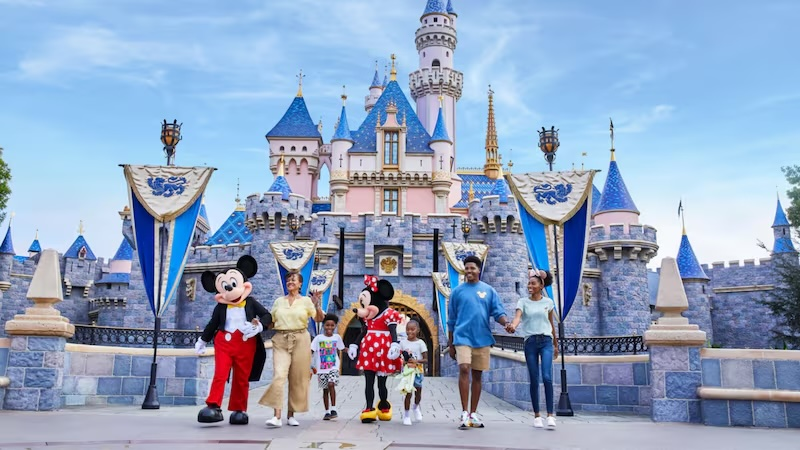

Disneyland, often dubbed "The Happiest Place on Earth," is a world-renowned theme park located in Anaheim, California. Opened on July 17, 1955, it was the first-ever park of its kind, envisioned and brought to life by Walt Disney. Disneyland was designed as a place where families could enjoy magical experiences together, blending the enchantment of Disney storytelling with immersive attractions and meticulously crafted environments. Over the decades, it has become a cultural icon, drawing millions of visitors annually from around the globe.

The park is divided into various themed lands, each offering unique experiences.
Main Street, U.S.A.
Adventureland
Tomorrowland
Fantasyland
New Orleans Square
Critter Country
Toon Town
Star Wars: Galaxies Edge
Attractions: The heart and Soul of Disneyland
Disneyland attractions are the heart and soul of the park, offering a mix of timeless classics and modern marvels that cater to visitors of all ages. Iconic rides like Pirates of the Caribbean and Haunted Mansion transport guests into immersive, story-driven experiences filled with rich detail and Disney magic. Thrill-seekers can enjoy adrenaline-pumping adventures on attractions like Space Mountain and Big Thunder Mountain Railroad, while families with younger children can delight in the whimsy of It's a Small World or the nostalgia of Dumbo the Flying Elephant. Disneyland also embraces innovation with cutting-edge experiences, such as the interactive and highly themed attractions in Star Wars: Galaxy's Edge, including Millennium Falcon: Smugglers Run and Star Wars: Rise of the Resistance. Beyond rides, the park features live entertainment, character meet-and-greets, and seasonal overlays, ensuring that there’s always something new and exciting for guests to enjoy.
Rider Ratings by Age Groups
Entertainment At the Park
Beyond the rides and attractions, Disneyland excels in creating a holistic experience through entertainment, dining, and live shows. Parades like the Main Street Electrical Parade and nighttime spectaculars such as "Fantasmic!" and "Disneyland Forever" fireworks have become quintessential elements of the Disneyland experience. Coupled with its attention to detail, cleanliness, and guest service, Disneyland remains a benchmark for theme parks worldwide.
2024 Full Magic Happens Parade
Food at Disney
The food at Disneyland is as much a part of the experience as the rides and attractions, offering a diverse array of options that cater to every palate. From iconic snacks like Mickey-shaped pretzels, churros, and Dole Whip to gourmet dining at spots like the elegant Blue Bayou Restaurant, the park ensures that food is both delicious and memorable. Disneyland is known for its seasonal treats and themed offerings, such as Halloween-inspired desserts or dishes from the Festival of Holidays. Casual eateries like the Plaza Inn serve hearty comfort foods, while places like Galaxy’s Edge offer unique, immersive cuisine, such as the exotic flavors of Ronto Wraps or Blue Milk. For those on the go, quick-service locations provide convenient, high-quality meals, and Disneyland’s dedication to dietary inclusivity ensures options for vegans, vegetarians, and those with food allergies. Every bite is part of the magic, making dining an essential part of a Disneyland visit.